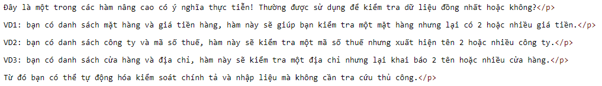

VD: Lấy ra các hàng có cột B,C dữ liệu không trùng lặp đồng thời.

Related function
COLOR Trả về mã màu sắc của ô chỉ định.
FILLMERGE Trả về mảng lấp đầy dữ liệu cho bộ ô đã bị xáo trộn (Merged).
Return to Home